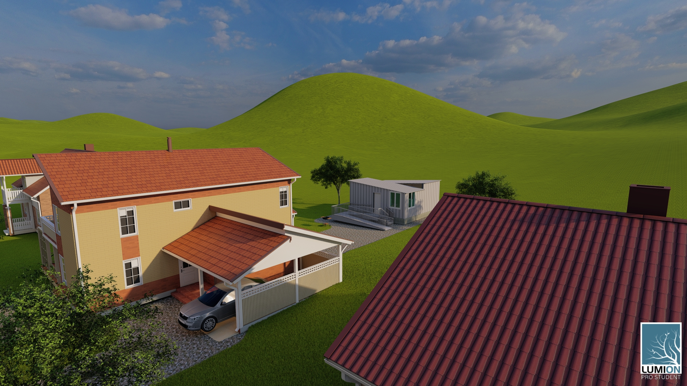

Accessory Dwelling Unit
Studio 3 ARCH 230-01
Professor Jeff Oberdorfer
Spring 2021

The ADU project serves as the first assignment in the Studio 3 Housing course. As an accessory unit, the structure holds one bedroom, one bathroom, a kitchenette, and a small living and dining room. Besides just housing, students in this course focused on ADA (American Disabilities Act) guidance and accessibility for people with disabilities. While limited in design possibilities, this ADU has plenty of natural light and ventilation with windows on every wall and a skylight protected from any harsh sunlight by sloped roofs overhead. The ADU has a ramp for any wheelchair users and stairs for those who are able.